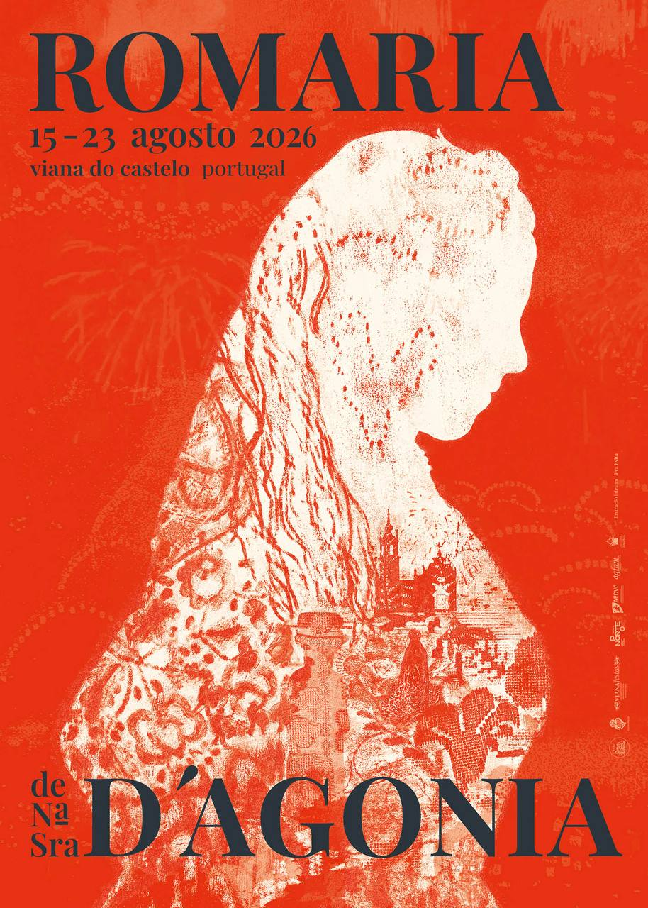

Event
Romaria d’Agonia 2026 in Viana do Castelo: a festive day by the Atlantic, a quiet evening in the Minho

From 15 to 23 August 2026, Viana do Castelo will once again celebrate Romaria d’Agonia. In the Minho, this is more than a summer event. It is part of the local calendar, with traditional dress, music, processions, fireworks and busy streets close to the Atlantic.
For visitors to Northern Portugal, the Romaria is a good reason to see Viana do Castelo at a different pace. The town feels more alive during the festivities, and the day can be combined with a walk through the historic centre, time by the river and, if the weather allows, a stop near the coast.
Returning to the quiet of Freixo
Large festivals are easier to enjoy when you also have somewhere quiet to return to. Casa Malheiro in Freixo works well as a base in the Minho: Viana do Castelo during the day, then back to a holiday home with a kitchen, space for the family and a slower evening rhythm.
It is worth keeping the plan flexible. On busier days, parking and restaurants may fill up earlier than usual. If you are travelling with children or several generations, a lighter schedule often makes the day more enjoyable.
A simple plan for the day
One simple plan is to start without rushing, spend the afternoon in Viana, eat early or prepare something easy back at the house, and then decide whether to return to the city in the evening depending on the programme.
If you would like to combine Romaria d’Agonia with a few quiet days in the Minho, our holiday homes in Freixo can be a practical base. Send us the dates you have in mind.